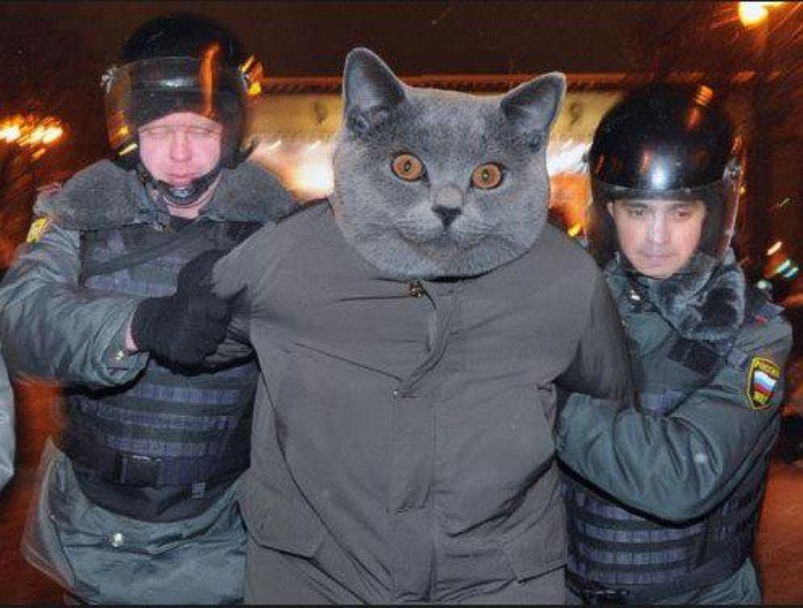

O autoru

Name: Kot Anatolij
Age: 20
Address: N/A
Phone: N/A
Email: tuma02@vse.cz
ID: tuma02

O kótu Anatoliju víme velice málo. Z archívu vědci zjistili,
že Kot Anatolij byl archimagem třetiho stupňů ve vesmíru Skyrim.
A v 1999 přišel v naš svět aby zajmout a zotročit ho. Ale něco šlo ne tak...
První informace kterou máme o Anatóliju patři 2015 roku.
Podle velice nepotvrzených údajů, Kot Anatolij je vůdce syrijske větvi Al-Káidy, ISIS.
V letě 2020 roku byl vůdcem na antivladnich mitingech v Rusku, kde byl
schycen policajtami.
V řijnu 2020 byl viděn v VŠE v Praze. Tam je známý jako Andrii Tuma.
Nikdo neví kde ho uvidíme přiště.
Na zpět